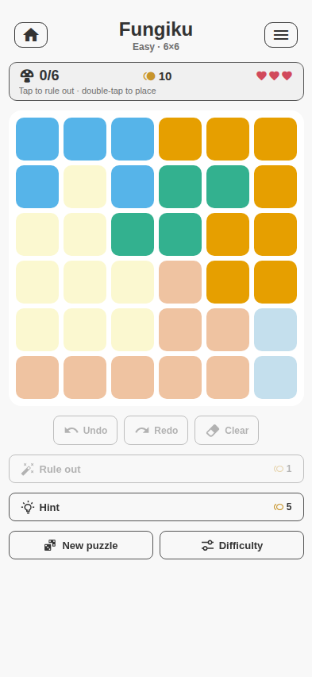
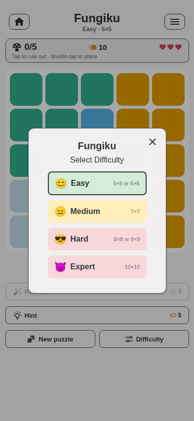
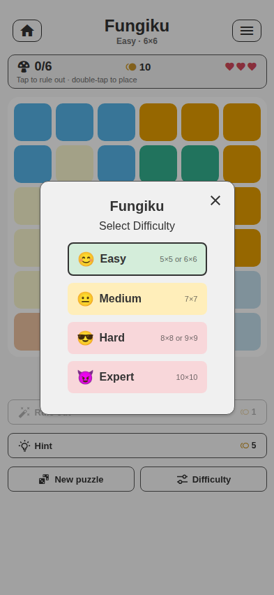

Current functionality, controls and states · redesign inventory

Easy 5×5 board.

Difficulty and board-size choice.
Main board and assistance toolbar.
| Difficulty | Board size | Current positioning |
|---|---|---|
| Easy | 5×5 or 6×6 | Short introduction. |
| Medium | 7×7 | Standard play. |
| Hard | 8×8 or 9×9 | Large-board challenge. |
| Expert | 10×10 | Maximum density. |
| Control / gesture | What it does | Cost / consequence |
|---|---|---|
| Tap cell | Toggles an ✕ rule-out mark. | No wallet cost. |
| Double-tap cell | Places a mushroom. | A wrong mushroom is flagged and costs one life. |
| Drag across cells | Sweeps a run of ✕ marks. | Fast elimination input. |
| Undo / Redo | Traverses player action history. | Disabled at history ends. |
| Clear | Clears current player marks through a confirmation path. | Puzzle identity remains. |
| Rule out | Automatically marks cells that can be logically excluded. | Costs 1 coin; unavailable when nothing can be marked. |
| Hint | Highlights/explains a forced next move through a positioned popover. | Costs 5 coins. |
| Reveal | Places/reveals help when no ordinary forced assist remains. | Costs 20 coins. |
| New puzzle | Generates the next puzzle at the current difficulty. | Replaces current board. |
| Difficulty | Opens Easy/Medium/Hard/Expert choice. | Starts a new size-appropriate puzzle. |
| Game menu | Opens puzzle and difficulty actions. | Header action. |
| Back to games | Returns to hub and preserves resumable state. | Header action. |

Difficulty/menu layer over a live board.
| State | Presentation / action |
|---|---|
| Hint available | Popover anchors to a relevant cell and describes a forced deduction. |
| No forced step | Reveal becomes the expensive fallback. |
| Wrong mushroom | Immediate error feedback and loss of one life. |
| Out of lives | Modal explains the reset; the same puzzle restarts. |
| Solved | Mushrooms animate and board ripples; win modal reports reward/next action. |
| Low wallet | Daily floor prevents the assist economy from becoming permanently unwinnable. |